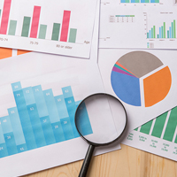

Gender data through FinScope
FinMark Trust started its own gender journey back in 2003 – with the first FinScope that collected data on financial services use for women at national level.
View our journey in supporting women from the beginning to the present, as well as the impact we're having with our people working for change in SADC.
FinMark Trust started its own gender journey back in 2003 – with the first FinScope that collected data on financial services use for women at national level.
Pricing to send a low value remittance, of which 63% of the recipients are estimated to be women – were in the range of 20%. Reducing this was a matter of urgency – to ensure these women had more funding available to make ends meet. FMT started to work together with its partners to take action – more details below.
Starting first in Cambodia, the FinScope team creating dedicated dashboards that focused on the intersection of financial inclusion and gender. This has been replicated in many countries since and is being actively used by our stakeholders at ministerial and central bank level.
Realizing that the data and analysis was not enough, we partnered with the Graca Machel Trust to host a SADC forum on issues pertaining to women and financial inclusion. The outcome of this was to map out a way forward which GMT and FMT could implement.
One of the key ways in which FMT is going to be able to actively ensure the promotion of financial inclusion that supports women is to take stock of where it is as an organisation. This ranges from aspects in HR, through to how our projects are designed and implemented – and what we require of our partners.
To ensure we could deliver on the priority areas identified during the forum and the audit, we started to conduct training internally to assist us in ensuring all of the projects we implement are able to articulate the role they play in the empowerment of women.
FMT established a Gender Strategy that we follow based on internal Gender training and prioritized actions.
We now proactively leverage this strategy to ensure that all of our projects track and articulate their contribution to the lives of women in SADC
Remittances are one of the biggest vehicles to drive international development. It exceeds international aid flows – and as such, the cost of a sending remittances has a profound impact on how much money is available for people to feed their families, educate their children, and live a dignified life.
As a net sender of Remittances, South Africa is an important economic hub in Southern Africa, with over 4 million mainly economic migrants sending money home to loved ones and families. The lockdown and loss in employment hit the 63% of women that are the recipients of these funds hard. After our close collaboration with large South African retailers, financial services providers and regulators – we successfully managed to incubate and bring to market a product that reduces this price to about 3%. In just Lesotho, this product, has transferred 1 billion rand – saving recipients approximately 380 million rand for recipients to spend on the things they need most. We are now extending this to the rest of the SADC region and all of its corridors – and have set ourselves an ambitious target of saving the women of SADC billions rather than millions.
South Africa is one of the key economies Southern Africa. Its economy sustains not only its own citizens – but many families that live beyond its borders and depend on remittances they receive. During the strict lockdown, these remittances simply dried up in the low income category – information that was verified by the largest Cross Border Remittances FSPs.
Many migrants are informal and have no legal status in South Africa – meaning they are ineligible for most of the support that the government provides. They – along with their dependents thus faced a precarious situation where they were locked inside, without any form of income – and families to feed.
FinMark Trust could not let this situation stand – and acted rapidly to create, prototype and launch our Migrant Relief Fund – supporting 11 000 households for four months during one of our strictest lockdowns.
On our knowledge hub, you can find more of our newest research, blog posts, articles, publications, films, and infographics on women and youth from across the SADC region.